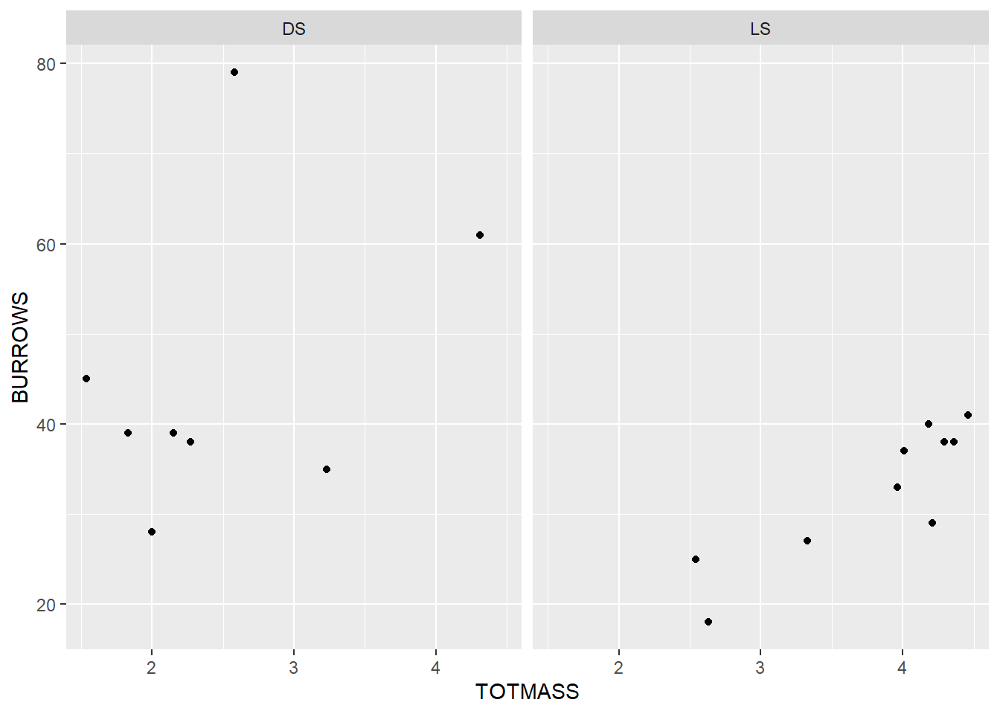
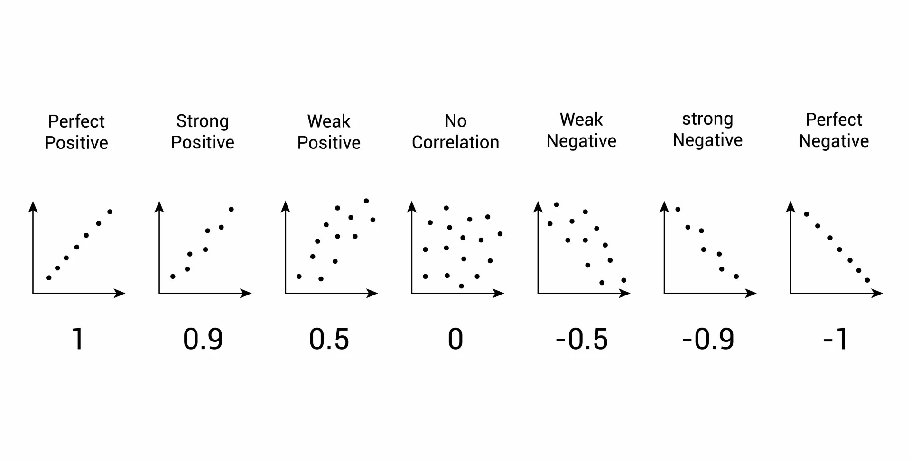
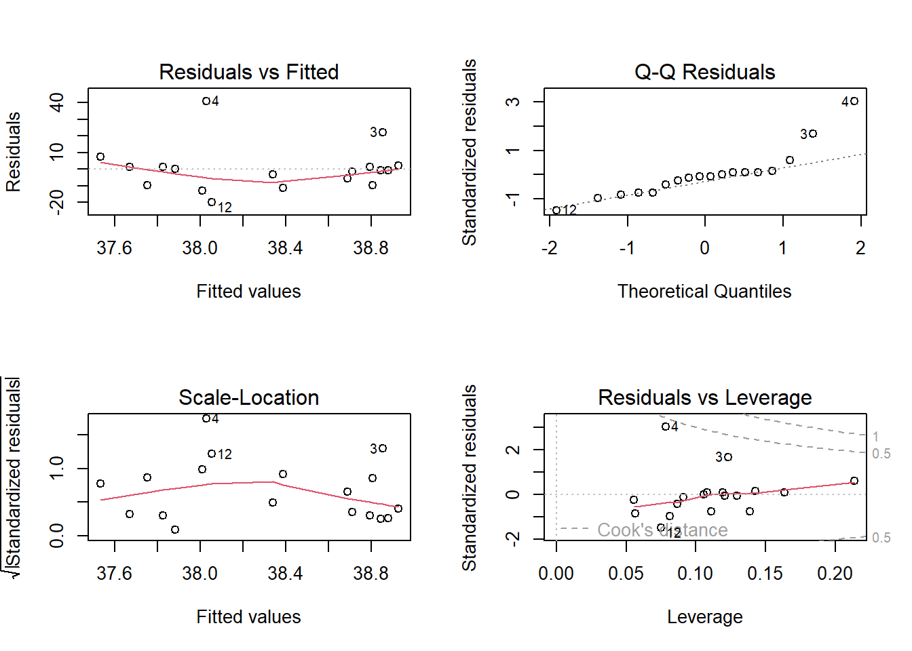
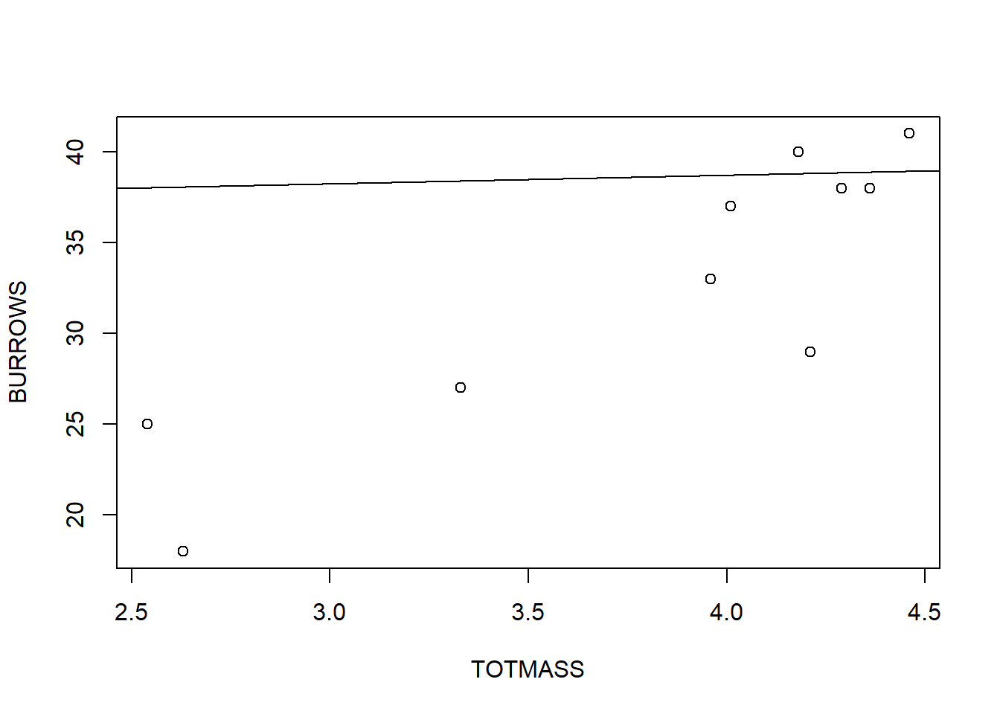
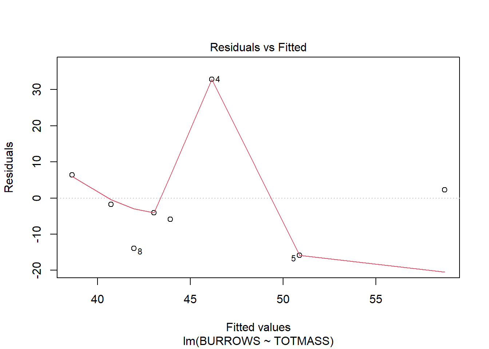
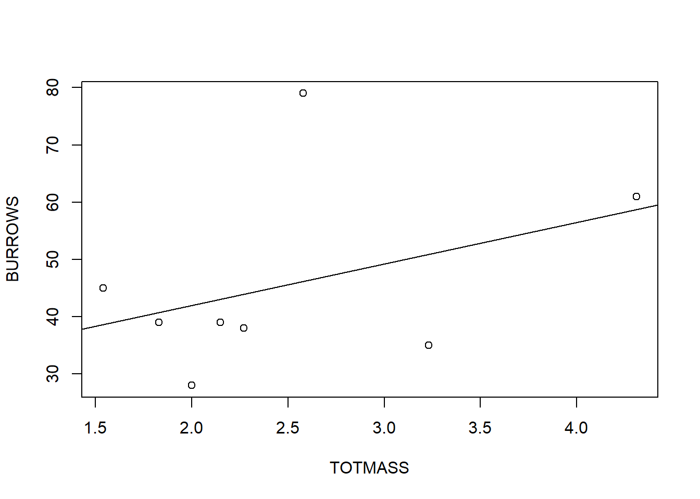

# get the data from the .csv file
df <- read.csv("data/green.csv")Correlation and linear regressions (4.1 and 4.2)
Example: crab and burrow density on Christmas Island (p. 73)
Green (1997) studied the ecology of red land crabs on Christmas Island and examined the relationship between the total biomass of red land crabs and the density of their burrows within 25 m2 quadrats (sampling units) at five forested sites on the island.We will look at two of these sites: there were ten quadrats at Lower Site (LS) and eight quadrats at Drumsite (DS). Scatterplots and boxplots are presented in Figure 5.3. There was slight negative skewness for biomass and burrow density for LS, and an outlier for burrow density for DS, but no evidence of nonlinearity. Pearson’s correlation coefficient was considered appropriate for these data although more robust correlations were calculated for comparison.
| Site | Correlation type | Statistic | P-value |
|---|---|---|---|
| DS (n = 8) | Pearson | 0.392 | 0.337 |
| Spearman | 0.168 | 0.691 | |
| Kendall | 0.036 | 0.901 | |
| LS (n = 10) | Pearson | 0.882 | 0.001 |
| Spearman | 0.851 | 0.002 | |
| Kendall | 0.719 | 0.004 |
The \(H_0\) of no linear relationship between total crab biomass and number of burrows at DS could not be rejected. The same conclusion applies for monotonic relationships measured by Spearman and Kendall’s coefficients. So there was no evidence for any linear or more general monotonic relationship between burrow density and total crab biomass at site DS.
The \(H_0\) of no linear relationship between total crab biomass and number of burrows at LS was rejected. The same conclusion applies for monotonic relationships measured by Spearman and Kendall’s coefficients. There was strong evidence of a linear and more general monotonic relationship between burrow density and total crab biomass at site LS.
The data we’ll use for this analysis:
DT::datatable(df)Plot the data
Plotting the data before performing analysis is crucial because it allows you to visually assess key characteristics and potential issues in the dataset. Here’s why it’s important:
Identify Patterns: Visualization helps you detect relationships between variables (e.g., linear, non-linear, or no relationship) that might guide your choice of analysis techniques.
Spot Outliers: You can easily notice any extreme values or outliers that might distort the analysis or require further investigation.
Check for Assumptions: Visualizing the data allows you to see if assumptions for statistical methods (e.g., normality, homoscedasticity, or linearity) are likely to be met.
Detect Data Errors: Unusual patterns or values in the plot can help you identify errors or anomalies in the data, such as incorrect entries or missing values.
Choose the Right Model: By plotting the data, you can gain insights into whether a linear model is appropriate or if other transformations or models (e.g., polynomial or logarithmic) are needed.
Overall, plotting the data gives you an initial understanding and helps prevent misinterpretations that could arise from relying solely on numerical methods.
library(ggplot2)
ggplot(df, aes(x = TOTMASS, y = BURROWS)) +
geom_point() +
facet_wrap(SITE~.)
Pearson’s correlation between total biomass and burrows at Drumsite (DS)

separate_df <- subset(df, SITE == "DS")
cor.test(formula = ~ TOTMASS + BURROWS, data = separate_df)
Pearson's product-moment correlation
data: TOTMASS and BURROWS
t = 1.0428, df = 6, p-value = 0.3372
alternative hypothesis: true correlation is not equal to 0
95 percent confidence interval:
-0.4322803 0.8592175
sample estimates:
cor
0.3917155
INTERPRETATION
The Pearson’s correlation between TOTMASS and BURROWS (Site = DS) is 0.39 (p-value = 0.33). The 95% confidence interval is from -0.4 to 0.85.
Pearson’s correlation between total biomass and burrows at Lower Site (LS)
separate_df <- subset(df, SITE == "LS")
cor.test(formula = ~ TOTMASS + BURROWS, data = separate_df)
Pearson's product-moment correlation
data: TOTMASS and BURROWS
t = 5.2925, df = 8, p-value = 0.000735
alternative hypothesis: true correlation is not equal to 0
95 percent confidence interval:
0.5674158 0.9718892
sample estimates:
cor
0.8819549
INTERPRETATION
The Pearson’s correlation between TOTMASS and BURROWS (Site = LS) is 0.88 (p-value < 0.05). The 95% confidence interval is from 0.56 to 0.97.
Different importances
These interpretations (e.g., strong, weak, etc.) reflect the overall significance of the correlations. However, the importance of these correlations varies across different scientific fields. A correlation of 0.5 may be weak for engineers , but it can be strong for biologists, for example.
Correlation ≠ Causation
Just because two things are related doesn’t mean one causes the other. Correlation shows a connection, but it doesn’t prove causation! Check this interesting article.
Linear models
Modelling burrows as function of total biomass at Lower Site (LS)
- Variable \(X\) (predictor): total biomass
- Variable \(Y\) (response): burrows
separate_df <- subset(df, SITE == "LS")
model1 <- lm(data = df, BURROWS ~ TOTMASS)
summary(model1)
Call:
lm(formula = BURROWS ~ TOTMASS, data = df)
Residuals:
Min 1Q Median 3Q Max
-20.054 -8.737 -0.863 1.297 40.970
Coefficients:
Estimate Std. Error t value Pr(>|t|)
(Intercept) 36.7991 11.2461 3.272 0.00479 **
TOTMASS 0.4771 3.3415 0.143 0.88824
---
Signif. codes: 0 '***' 0.001 '**' 0.01 '*' 0.05 '.' 0.1 ' ' 1
Residual standard error: 14.08 on 16 degrees of freedom
Multiple R-squared: 0.001273, Adjusted R-squared: -0.06115
F-statistic: 0.02039 on 1 and 16 DF, p-value: 0.8882par(mfrow = c(2,2))
plot(model1)
Fitted regression line of the model
plot(BURROWS ~ TOTMASS, data = separate_df)
#add fitted regression line to scatterplot
abline(model1)
Modelling burrows as a function of total biomass at Drumsite (DS)
- Variable \(X\) (predictor): total biomass
- Variable \(Y\) (response): burrows
separate_df <- subset(df, SITE == "DS")
model2 <- lm(data = separate_df, BURROWS ~ TOTMASS)
summary(model2)
Call:
lm(formula = BURROWS ~ TOTMASS, data = separate_df)
Residuals:
Min 1Q Median 3Q Max
-15.871 -7.926 -2.886 3.321 32.839
Coefficients:
Estimate Std. Error t value Pr(>|t|)
(Intercept) 27.465 18.247 1.505 0.183
TOTMASS 7.247 6.949 1.043 0.337
Residual standard error: 16.46 on 6 degrees of freedom
Multiple R-squared: 0.1534, Adjusted R-squared: 0.01235
F-statistic: 1.088 on 1 and 6 DF, p-value: 0.3372plot(model2, which = 1)
Fitted regression line of the model
plot(BURROWS ~ TOTMASS, data = separate_df)
#add fitted regression line to scatterplot
abline(model2)